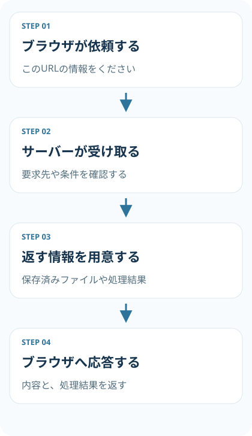

「サーバーが混み合っています」と表示されると、どこかに大きな箱があって、その中にサイトが入っているのだろうかと想像するかもしれません。サーバーとは、ほかの機器やプログラムからの要求に応じて情報や機能を提供する側です。今回は、Webページを届けるサーバーの仕事に絞って見てみましょう。
01 — DIGITAL BASICS
お願いする側と、答える側がある
ブラウザから「このページをください」という要求が届くと、Webサーバーは対応する情報を返します。要求する側をクライアントと呼び、ページを見る場面ではブラウザがその役割を担います。二つの役割をつなぐのが、リクエストとレスポンスというやり取りです。
お店の案内ページなら、営業時間の文章や店内写真を届けます。一方、検索フォームのあるサイトなら、指定された条件に応じて結果を返す場合があります。同じ「サーバーへ依頼する」でも、用意済みのファイルを渡す仕事と、その場で結果を作る仕事があります。
02 — DIGITAL BASICS
サーバーは機械？それともソフトウェア？
「Webサーバー」という言葉は、コンピューター自体を指す場合も、その中で要求を受けて答えるソフトウェアを指す場合もあります。ハードウェアは処理や保存を支える機械、ソフトウェアはその上で動くプログラムです。両方をまとめて呼ぶこともあるため、文脈によって意味が少し変わります。
たとえば倉庫の建物と、注文に応じて品物を出す係を分けて考えると、役割の違いを想像しやすくなります。ただし実際のサーバーは、人が一件ずつ箱を運ぶ仕組みではありません。プログラムが要求を読み取り、処理して応答します。
この節の参考：資料1

03 — DIGITAL BASICS
用意済みのページと、その場で作るページ
静的な配信では、あらかじめ置いてあるHTMLや画像などのファイルを返します。お店の案内や記事をファイルとして用意しておくのが一つの例です。「静的」は画面が一切動かないという意味ではありません。配信したページのプログラムで表示が変わる場合もあります。
動的な配信では、受け取った条件などに応じて処理し、返す内容を組み立てます。商品検索なら、検索条件から必要な情報を探し、結果として返すイメージです。データベースは、その処理で参照する情報を整理して保存する仕組みです。すべてのページにデータベースが必要というわけではありません。
この節の参考：資料1
04 — DIGITAL BASICS
見えないところで、役割を分担することもある
利用者には一つのサイトに見えても、裏側では複数のサーバーが処理を分担している場合があります。逆に、一台の機械で複数のサイトを扱うこともできます。ブラウザから見えるサイトの数と、機械の台数はそのまま対応しません。
要求された情報が見つからなければ、404のような結果が返る場合があります。ただし、エラー表示を見ただけで「機械が壊れた」とは限りません。ページがないこと、処理が失敗したこと、接続できないことは別の状態です。サーバーを単なる保存箱としてではなく、要求を受けて答える役割として見ると整理できます。
REMEMBER
今日覚えておきたい3つのこと
- 01
サーバーは、要求に応じて情報や機能を提供する側。
- 02
機械を指すことも、その上のソフトウェアを指すこともある。
- 03
用意済みのファイルを返す場合と、その場で結果を作る場合がある。
参考資料・情報確認日
情報確認日：2026年11月22日。通信の基本を理解するために一部を簡略化しています。